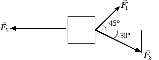

Equilibrio per traslazioni
Esercizi
Quesito: Per tenere in equilibrio un corpo posto su un piano inclinato di altezza pari ad h = 40 cm e lunghezza l = 60 cm è necessario applicare una forza pari a 40 N. Si calcoli la massa del corpo posto sul piano inclinato.
Risposta: Siccome la componente perpendicolare della forza-peso è equilibrata dalla reazione vincolare del piano, rimane attiva la componente parallela della forza-peso. Tale componente è uguale a 40 N. Pertanto sappiamo che 40 = m · g · h / l da cui possiamo ricavarci il valore della massa posta sul piano:
m = 40 · l / (g · h) = 40 · 0.6 / (9.8 · 0.4) kg = 6.12 kg.Quesito: Il blocco in figura è in un equilibrio, pur essendo soggetto all'azione di tre forze. Sapendo che F1 = 7.05 N e F2 = 10 N, si determini il valore dell'intensità della forza F3.

Risposta: Per risolvere questo esercizio dobbiamo procedere alla scomposizione delle forze 1 e 2. La forza 1 è inclinata di 45° rispetto all'orizzontale. Pertanto le sue componenti lungo x e y saranno uguali tra loro: F1x = F1y = 7.05 / 1.41 N = 5 N. Più complicata è invece la scomposizione della forza 2. Siccome l'angolo è di 30°, il triangolo in figura risulta essere la metà di un triangolo equilatero di lato 10 N. Pertanto la componente verticale della forza 2 è la metà del lato, mentre quella orizzontale è uguale all'altezza del triangolo equilatero. Di conseguenza le due componenti saranno F2x = 0.866 · 10 N = 8.66 N mentre F2y = 10 / 2 N = 5 N. Notiamo che F1y = F2y. Dal momento che queste due componenti sono uguali come intensità ma opposte come verso, il corpo non trasla lungo l'asse verticale. Affinché il corpo non trasli neanche lungo l'asse orizzontale è necessario che l'intensità di F3 uguagli la somma delle componenti orizzontali delle altre due forze: F3 = F1x + F2x = (5 + 8.66) = 13.66 N.
Quesito: Con un dinamometro scopriamo che la componente parallela della forza-peso agente su un corpo posto su un piano inclinato vale 5 N. Quanto vale la forza-peso del corpo sapendo che il piano inclinato ha un'altezza di h = 30 cm e una lunghezza di l = 70 cm?
Risposta: Si tratta ancora una volta di invertire la formula che ci dà la componente parallela della forza-peso per trovare il peso FP = m · g dell'oggetto. Avremo pertanto che 5 N = FP · h / l da cui otteniamo 5 = FP · 30 / 70. Si tratta di un'equazione di primo grado in FP che può essere risolta moltiplicando per 70 e dividendo per 30 entrambi i membri dell'uguaglianza: FP = 70 · 5 N / 30 = 11.67 N.